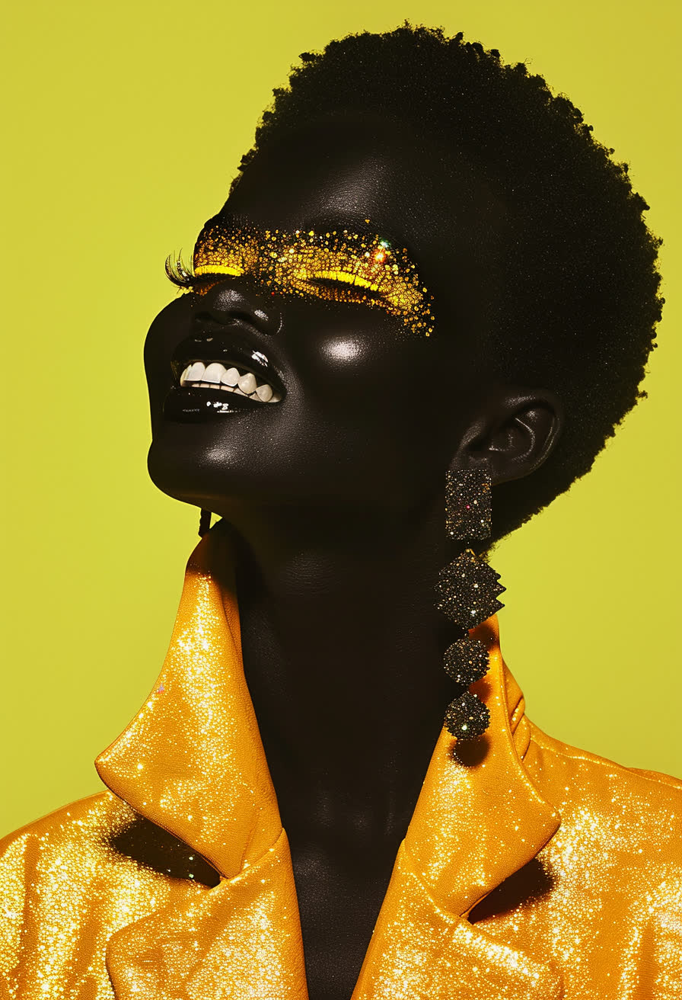
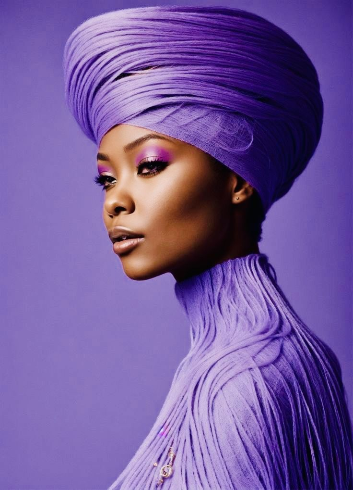
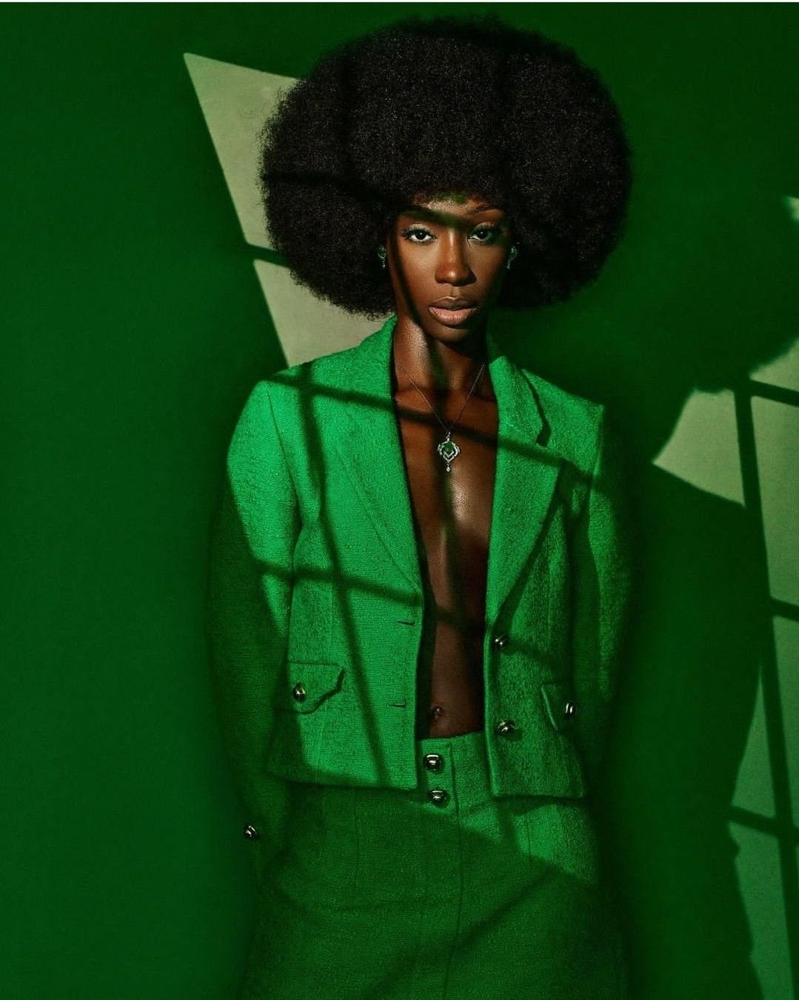
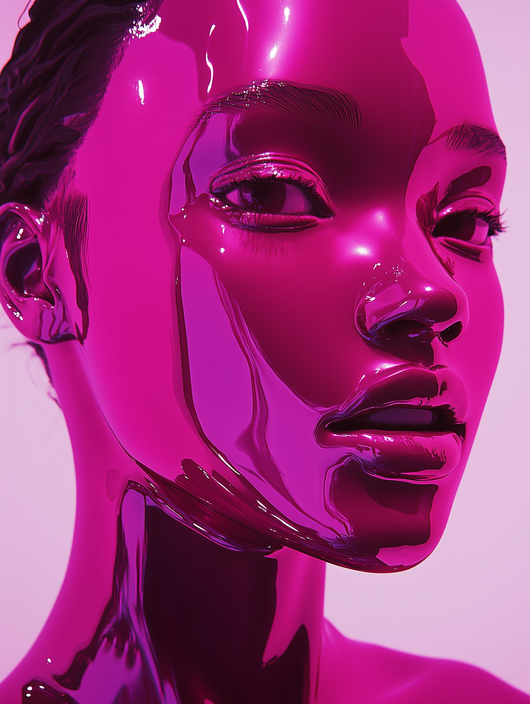
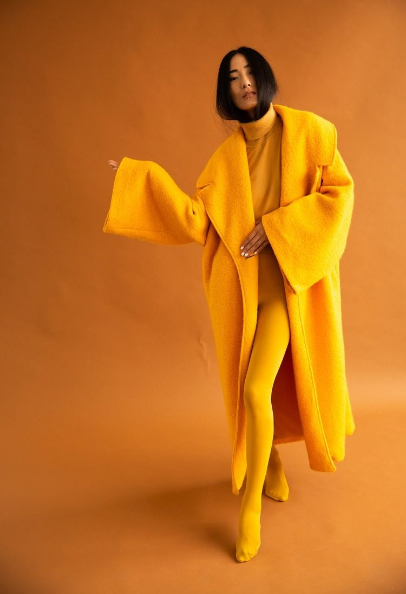
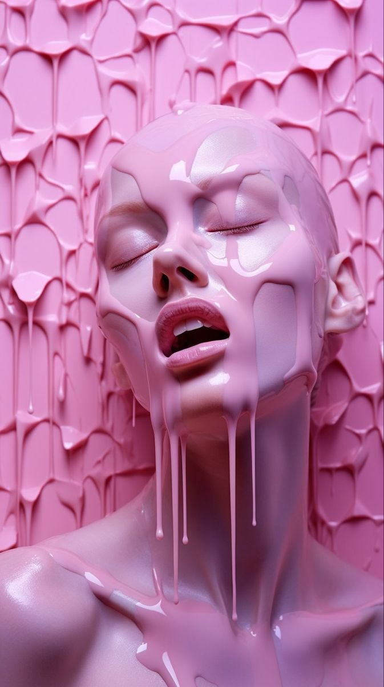
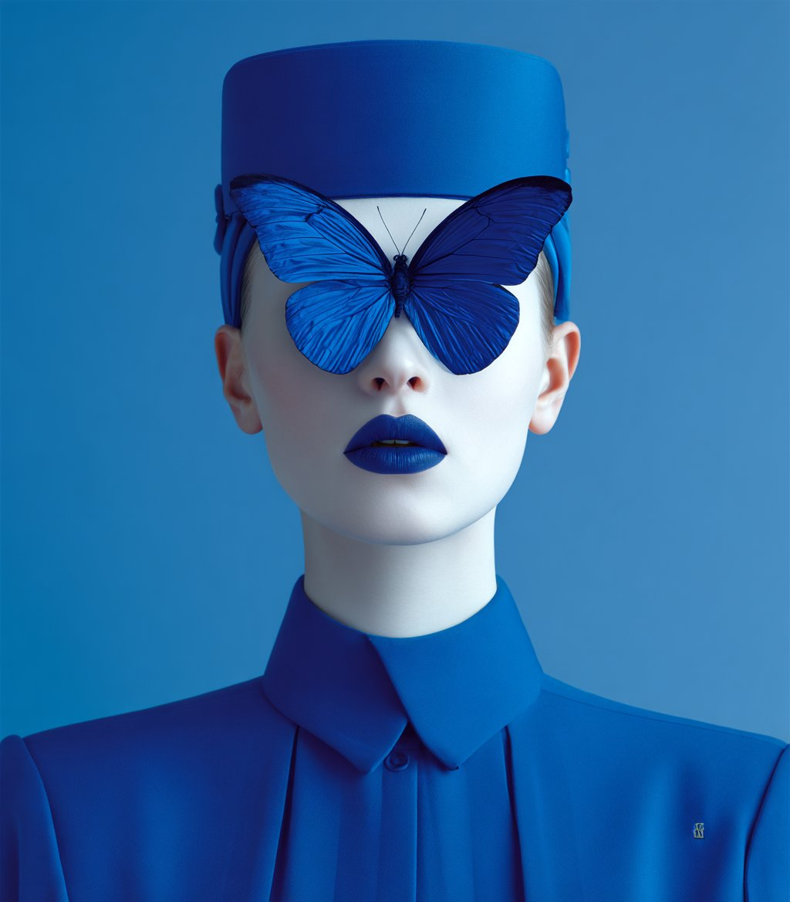
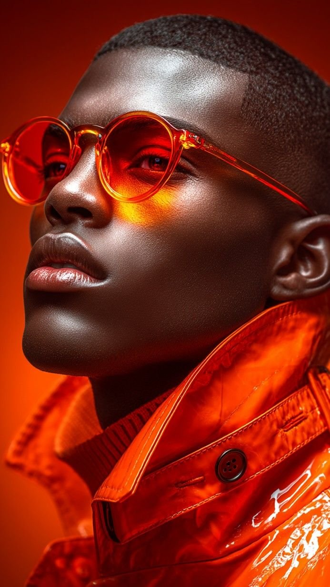
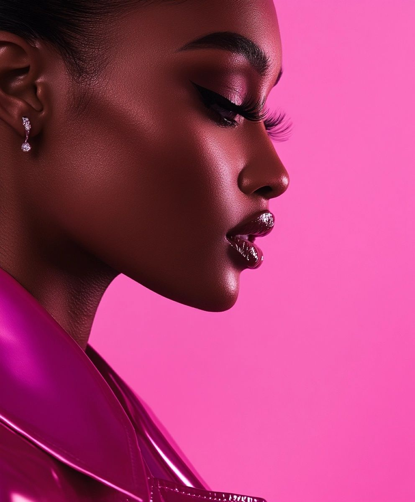
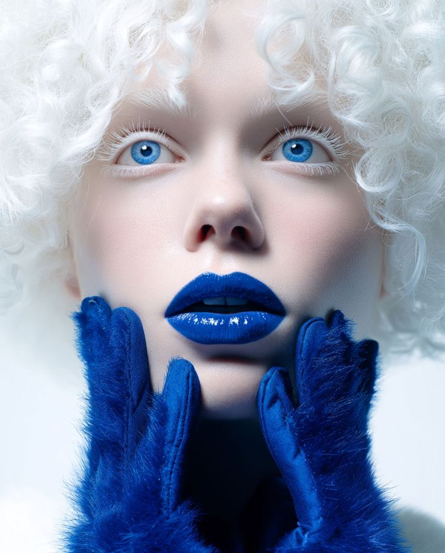

CSS Animations · Reveals
Everything here is one HTML attribute.
Scroll slowly — every card below reveals on its own enter timeline.

The entrance matrix
All 32 entrance names the library ships, grouped like the catalog.
Fade — 5


Slide — 4



Logical (RTL-aware) — 4




Zoom — 4
Flip — 2

Rotate — 5


Blur — 1

Combo presets — 2
Character easing — 5

Composition
Two or three effects in one attribute. They compile into a single declaration with parallel value lists, and are only allowed when the CSS channels they own are disjoint.
Parameters
Any parameter the primitive declares can be tuned inline, and is validated before it ever reaches CSS.


Triggers
Effects don't have to fire on enter — hover, click, and load are first-class triggers too.